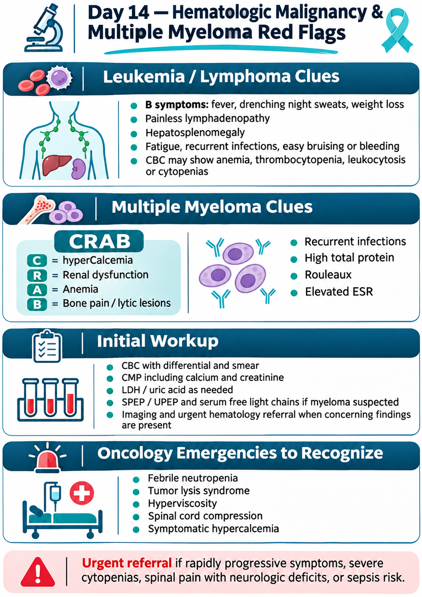
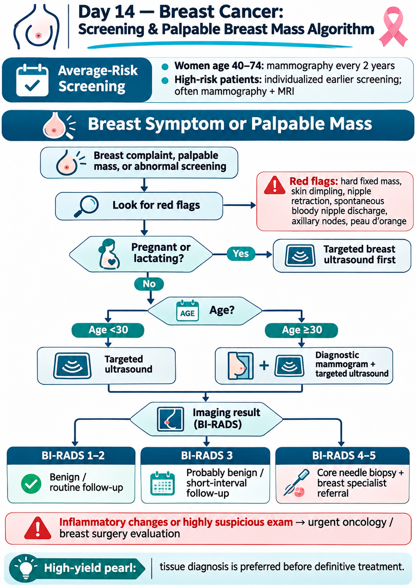
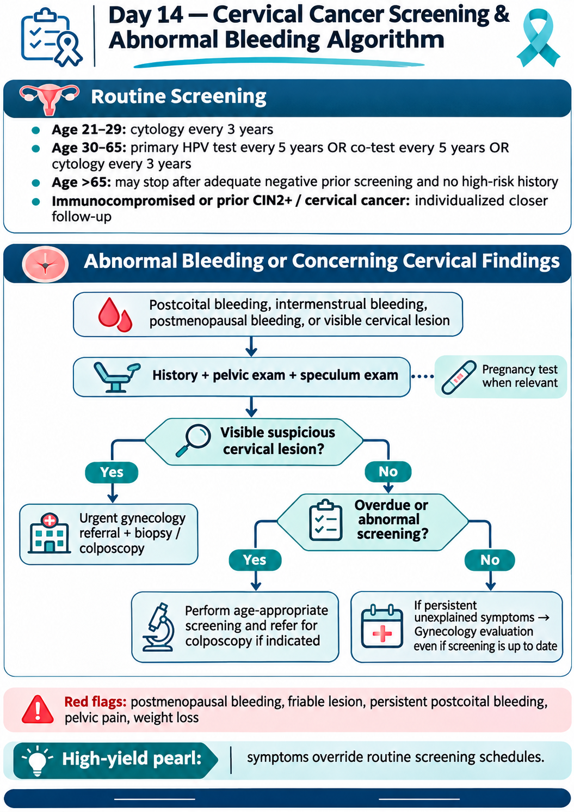
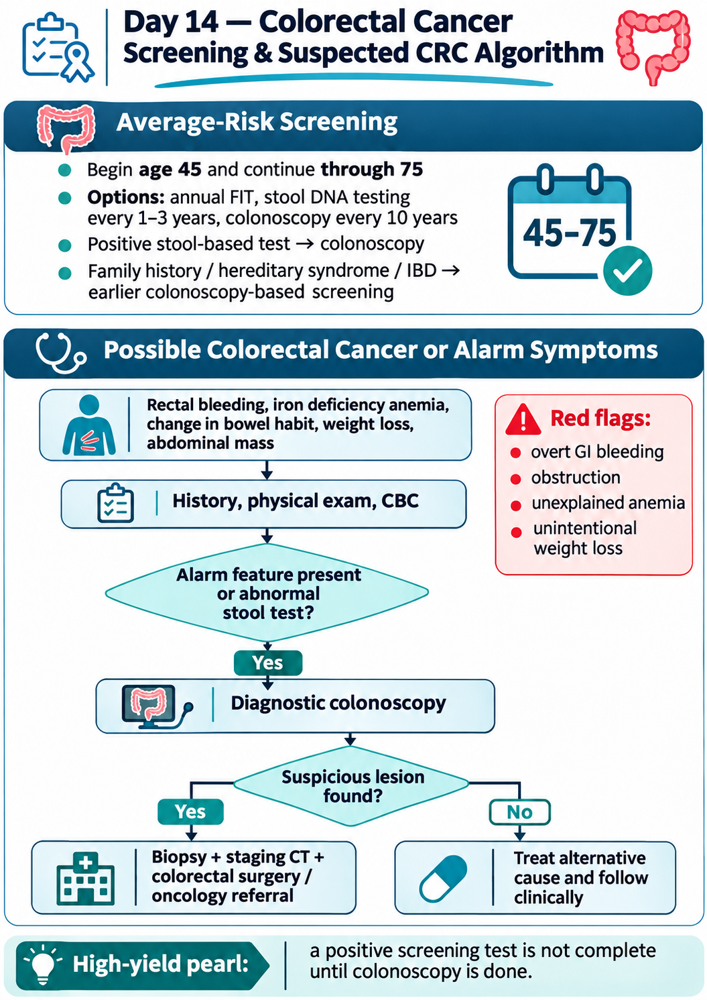
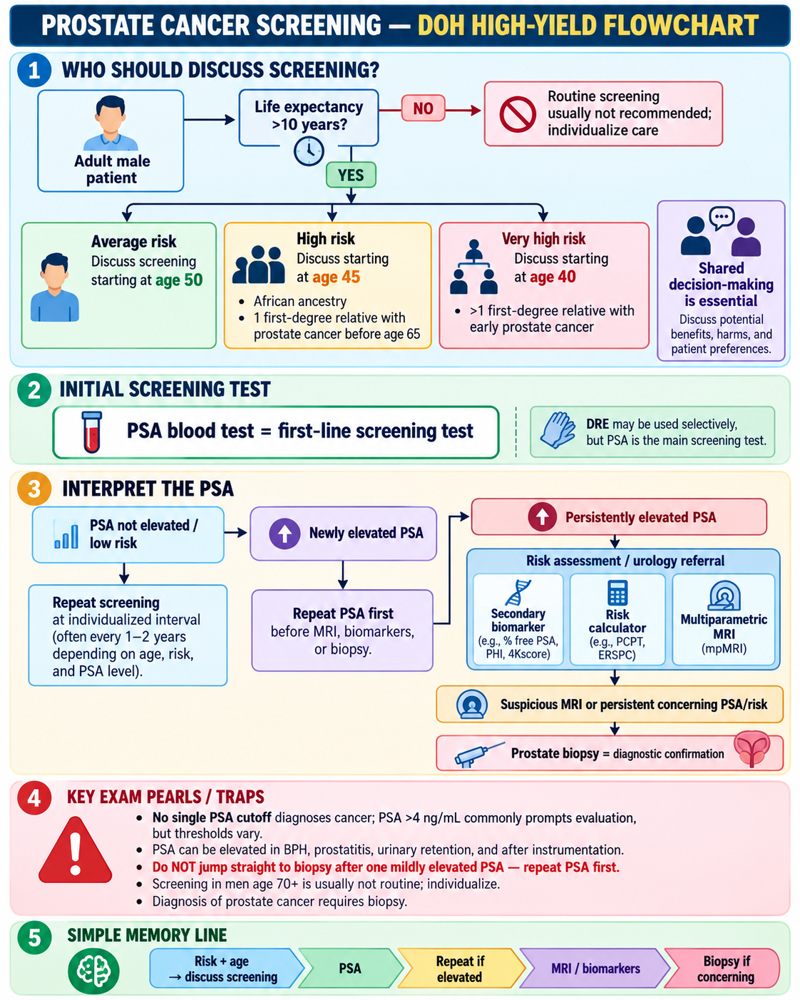
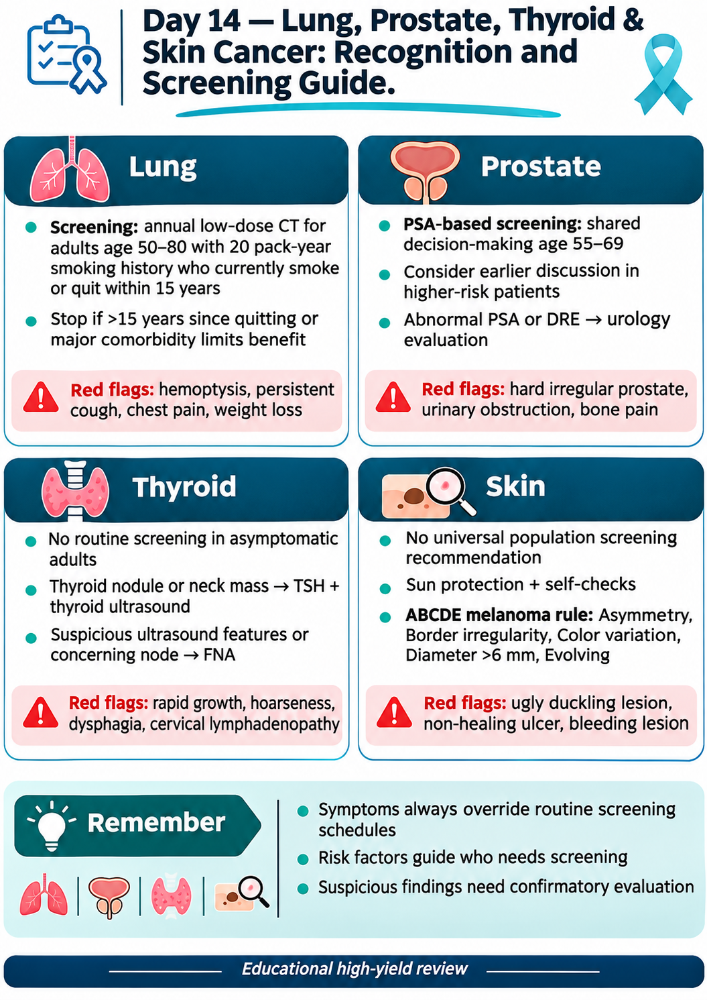

🎗️ Cancer Red Flags, Screening & Primary-Care Pathways
High-yield recognition of hematologic malignancy plus breast, cervical, colorectal, prostate, lung, thyroid and skin cancer screening principles.
80 questions
Multiple Myeloma: CRAB / SLiM & Workup
Recognize end-organ damage and the myeloma-defining biomarkers that move a monoclonal gammopathy into active multiple myeloma.
Classic presentation
- CRAB: hyperCalcemia, Renal impairment, Anemia, Bone lesions.
- Bone pain (especially back/ribs), fatigue, recurrent infections or renal dysfunction are classic clues.
- Monoclonal protein may be detected on SPEP/UPEP; some patients have predominantly free light-chain disease.
High-yield workup
- CBC, calcium, creatinine/eGFR, total protein/albumin.
- SPEP + immunofixation + serum free light chains; urine studies when appropriate.
- Bone marrow biopsy confirms clonal plasma cells; modern imaging favors whole-body low-dose CT, PET/CT or MRI over a plain skeletal survey when available.
SLiM biomarkers
- S: clonal marrow plasma cells ≥60%.
- Li: involved/uninvolved serum free-light-chain ratio ≥100 (with sufficient involved light chain).
- M: >1 focal lesion on MRI (≥5 mm). These can define active myeloma even before classic CRAB damage.
Red flags / traps
- Do not dismiss unexplained anemia + renal dysfunction + bone pain as “aging.”
- Hypercalcemia or AKI can require urgent stabilization.
- MGUS and smoldering myeloma lack myeloma-defining events; they are not treated like symptomatic myeloma.
🩺 Multiple Myeloma & Hematologic Malignancy Red Flags
Click to open/close.
Leukemia & Lymphoma Red Flags
Use CBC patterns, systemic symptoms and lymph-node features to identify patients who need urgent hematologic evaluation.
Leukemia clues
- Unexplained cytopenias or leukocytosis, circulating blasts, recurrent infections, bruising/bleeding, bone pain, fatigue.
- Acute leukemia: rapidly evolving illness with blasts and marrow failure.
- Very high WBC with neurologic or respiratory symptoms raises concern for leukostasis.
Lymphoma clues
- B symptoms: unexplained fever, drenching night sweats and unintentional weight loss.
- Persistent, firm, non-tender lymphadenopathy; supraclavicular nodes are particularly concerning.
- Splenomegaly, pruritus or mediastinal symptoms can be presenting features.
Initial workup
- CBC with differential + peripheral smear, CMP/LDH, uric acid as clinically appropriate.
- Abnormal node → tissue diagnosis; an excisional lymph-node biopsy is often preferred when lymphoma is suspected.
- Avoid prolonged empiric steroids before tissue diagnosis unless clinically necessary because they can obscure pathology.
Emergency patterns
- Tumor lysis syndrome, leukostasis, severe infection/neutropenic sepsis, DIC (especially APL) or spinal cord compression require urgent treatment.
- Blasts on smear plus cytopenias should not be managed as routine outpatient anemia.
- Fever in a profoundly neutropenic patient is an emergency.
🩺 Leukemia / Lymphoma & Hematologic Malignancy Red Flags
Click to open/close.Breast Cancer Screening & Breast Lump Approach
Separate routine screening from diagnostic evaluation of a new breast symptom.
Screening essentials
- For average-risk women/persons assigned female at birth, current USPSTF guidance recommends biennial mammography from age 40–74.
- Patients at very high hereditary risk (e.g., BRCA-related syndromes) need a different high-risk screening pathway.
- A screening mammogram is for asymptomatic patients; a palpable mass is a diagnostic problem.
New breast lump
- History: duration, cyclicity, nipple discharge, skin changes, pregnancy/lactation, family history.
- Examine both breasts and regional nodes.
- Age and context guide imaging: ultrasound is often useful in younger patients; diagnostic mammography ± targeted ultrasound is typical in older adults.
Suspicious features
- Hard, irregular, fixed mass; skin dimpling; peau d’orange; bloody unilateral nipple discharge; new nipple retraction; axillary nodes.
- Imaging and exam should be concordant. A suspicious lesion generally requires tissue diagnosis.
- Triple assessment: clinical exam + imaging + biopsy when indicated.
Pitfalls
- Do not reassure solely because a mass is painless.
- A negative screening mammogram does not end the evaluation of a persistent palpable abnormality.
- Pregnancy/lactation does not exclude malignancy; choose appropriate imaging.
🩺 Breast Cancer Screening & Palpable Mass Algorithm
Click to open/close.
Cervical Cancer Screening
Know the major screening strategies and when routine screening should stop.
Average-risk screening
- Guidelines vary slightly by organization; a current widely used framework starts routine screening in the mid-20s.
- ACS: primary HPV testing every 5 years starting at age 25 is preferred, with acceptable alternatives depending on availability.
- USPSTF’s established framework: cytology every 3 years age 21–29; age 30–65 may use cytology every 3 years, primary hrHPV every 5 years, or cotesting every 5 years.
When to stop
- Routine screening can stop after age 65 if prior screening has been adequate and there is no high-risk history.
- After total hysterectomy with cervix removed and no history of CIN2+ or cervical cancer, routine screening is generally not indicated.
- High-risk patients (HIV/immunocompromise, DES exposure, prior high-grade lesions) need individualized follow-up.
HPV prevention
- Persistent high-risk HPV infection drives nearly all cervical cancers.
- HPV vaccination prevents many HPV-related precancers/cancers but does not eliminate the need for screening in eligible patients.
- Abnormal screening results are managed by risk-based colposcopy/surveillance pathways.
Pitfalls
- Do not use symptoms such as postcoital bleeding as a “screening” issue—symptoms need diagnostic evaluation.
- Do not overscreen very young patients.
- A prior HPV vaccine does not automatically remove screening requirements.
🩺 Cervical Cancer Screening & Abnormal Bleeding Algorithm
Click to open/close.
Colorectal Cancer Screening
Know who gets screened, which tests count, and when a positive stool test must lead to colonoscopy.
Average-risk ages
- Start at age 45 for average-risk asymptomatic adults.
- Routine screening continues through age 75; age 76–85 is individualized based on prior screening, health and preferences.
- Screening after age 85 is generally not recommended.
Screening options
- FIT annually, stool DNA/FIT at recommended intervals, colonoscopy every 10 years, CT colonography or flexible sigmoidoscopy are accepted strategies depending on guideline and availability.
- Any positive stool-based screening test requires diagnostic colonoscopy.
- Colonoscopy both detects and removes precancerous polyps.
Higher-risk patients
- Family history, hereditary syndromes, prior advanced adenoma, inflammatory bowel disease or prior CRC may require earlier/more frequent colonoscopy.
- Symptoms such as iron-deficiency anemia, overt bleeding or unexplained weight loss require diagnostic workup, not screening.
- Quality of prior colonoscopy and pathology changes the interval.
Pitfalls
- Do not repeat a positive FIT instead of arranging colonoscopy.
- Do not call a symptomatic evaluation “screening.”
- Age 45 is now the key average-risk starting age.
🩺 Colorectal Cancer Screening & Suspected CRC Algorithm
Click to open/close.
Prostate Cancer Screening & PSA Pathway
Use shared decision-making and interpret PSA in context rather than as a binary cancer test.
Screening concept
- USPSTF currently recommends individual/shared decision-making for PSA screening in men age 55–69.
- Routine PSA screening is not recommended for men age 70 or older by USPSTF.
- Other professional societies may begin discussions earlier, particularly in higher-risk patients; local guidance should be followed.
Why PSA can mislead
- PSA can rise with benign prostatic hyperplasia, prostatitis, recent instrumentation and cancer.
- A single elevated PSA should be interpreted with age, trend, prostate size, medications and infection/inflammation history.
- Repeat PSA, risk calculators, MRI and/or urology referral may be appropriate before biopsy depending on context.
High-risk factors
- Older age, strong family history and African ancestry increase risk.
- Shared decision-making should include potential mortality benefit versus false positives, biopsy harms, overdiagnosis and treatment complications.
- Symptomatic patients (e.g., bone pain, urinary obstruction, hematuria) need diagnostic evaluation rather than routine screening.
Pitfalls
- PSA is not cancer-specific.
- Do not screen automatically without discussing benefits/harms.
- A normal PSA does not exclude every clinically significant prostate cancer.
🩺 Prostate Cancer Screening & PSA Flowchart
Click to open/close.
Lung Cancer Screening
Memorize the eligibility criteria for annual low-dose CT and know when screening should stop.
Who qualifies
- USPSTF: adults 50–80 years with a ≥20 pack-year smoking history who currently smoke or quit within the past 15 years.
- Use annual low-dose CT (LDCT), not chest x-ray, for screening.
- Screening is for asymptomatic high-risk patients.
When to stop
- Stop once the person has not smoked for 15 years.
- Also stop when health status or life expectancy substantially limits potential benefit or ability/willingness to undergo curative lung surgery.
- Smoking-cessation counseling remains essential even when screening is performed.
Nodule pathway
- Abnormal LDCT findings are managed according to nodule size, growth and radiologic risk features.
- Not every nodule is cancer; avoid automatic biopsy without risk stratification.
- Persistent hemoptysis, unexplained weight loss or focal symptoms require diagnostic evaluation rather than screening.
Pitfalls
- Chest x-ray is not an adequate lung cancer screening test.
- Pack-years = packs/day × years smoked.
- Screening does not replace smoking cessation.
🩺 Lung Cancer Screening & Cancer Recognition Guide
Click to open/close.
Thyroid & Skin Cancer Basics
Know what not to screen routinely and recognize the findings that require diagnostic evaluation.
Thyroid cancer
- USPSTF recommends against routine screening for thyroid cancer in asymptomatic adults.
- A symptomatic thyroid nodule is different: assess TSH and ultrasound features, then use risk-based FNA criteria.
- Red flags include rapid growth, hoarseness, cervical nodes, prior neck radiation or hereditary medullary thyroid cancer syndromes.
Skin cancer
- USPSTF finds insufficient evidence for routine clinician visual skin screening in asymptomatic average-risk adolescents/adults.
- A suspicious lesion still requires diagnostic assessment.
- ABCDE melanoma clues: Asymmetry, Border irregularity, Color variation, Diameter, Evolution; the “ugly duckling” sign is also useful.
Common cancer patterns
- Basal cell carcinoma: pearly papule/telangiectasia, often sun-exposed.
- Squamous cell carcinoma: scaly/keratotic or ulcerated lesion, sun-exposed or chronically damaged skin.
- Melanoma: evolving atypical pigmented lesion; biopsy is required for diagnosis.
Pitfalls
- “No routine screening” does not mean ignore a changing lesion or neck mass.
- Do not rely on diameter alone for melanoma—evolution and asymmetry matter.
- Avoid population thyroid ultrasound screening in asymptomatic average-risk adults because of overdiagnosis.
🩺 Thyroid & Skin Cancer Recognition Guide
Click to open/close.⚡ Day 14 Rapid Review
Day 14 completion
Mark complete when you finish the notes, practice questions and QBank block.